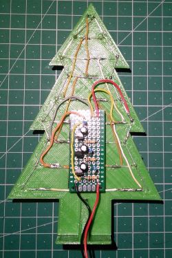
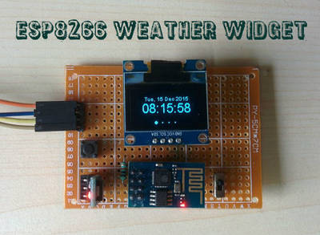
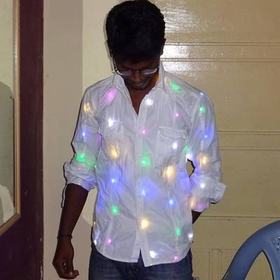
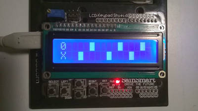

2015-12-22 - Nº 34

Editorial
Aqui está a Newsletter Nº 34 no seu formato habitual. Foram adicionados botões de partilha nas várias redes sociais, se gostar da Newsletter partilhe-a!
Todas as Newsletters encontram-se indexadas no link.
Esta Newsletter tem os seguintes tópicos:
Esta semana comemoram-se 25 anos desde que foi lançando em 1990 o primeiro servidor Web. Ficámos também a saber que vai passar junto à Terra, um asteróide gigante, na véspera de Natal. Por fim, ficamos a conhecer o trabalho de um hacker que resolveu meter mãos à obra e construir o seu próprio carro auto-conduzido. Na Newsletter desta semana falamos de vários projetos de maker que poderão ser interessantes de explorar. Iremos construir um circuito para uma pequena árvore de Natal com LEDs a piscar.
Votos de Boas Festas para todos.
 João Alves ([email protected])
João Alves ([email protected])
O conteúdo da Newsletter encontra-se sob a licença  Creative Commons Attribution-NonCommercial-ShareAlike 4.0 International License.
Creative Commons Attribution-NonCommercial-ShareAlike 4.0 International License.
Novidades da Semana ^
Enormous Asteroid Will Zip Past Earth On Christmas Eve
"Christmas Eve is going to be a busy night in space for Earth-dwellers. Not only will the International Space Station (ISS) be visible over the U.K. on Christmas Eve, but there will also be a giant asteroid passing over Earth. And Santa’s sleigh will be up there too, obviously. The asteroid, known as both 163899 and 2003 SD220, will pass Earth on Christmas Eve at 8 kilometers (5 miles) per second. While initial reports estimated the asteroid to be between 0.7 and 1.3 kilometers (0.4 and 0.8 miles) in diameter, recent findings from the Arecibo Observatory say it's more likely to be around 2 kilometers (1.2 miles) in size."
The First Person to Hack the iPhone Built a Self-Driving Car. In His Garage
"A few days before Thanksgiving, George Hotz, a 26-year-old hacker, invites me to his house in San Francisco to check out a project he’s been working on. He says it’s a self-driving car that he had built in about a month. The claim seems absurd. But when I turn up that morning, in his garage there’s a white 2016 Acura ILX outfitted with a laser-based radar (lidar) system on the roof and a camera mounted near the rearview mirror. A tangle of electronics is attached to a wooden board where the glove compartment used to be, a joystick protrudes where you’d usually find a gearshift, and a 21.5-inch screen is attached to the center of the dash. “Tesla only has a 17-inch screen,” Hotz says."
The world's first website and server go live at CERN

"By Christmas 1990, Berners-Lee had defined the Web’s basic concepts, the URL, http and html, and he had written the first browser and server software. Info.cern.ch was the address of the world's first website and web server, running on a NeXT computer at CERN. The world's first web page address was http://info.cern.ch/hypertext/WWW/TheProject.html, which centred on information regarding the WWW project. Visitors could learn more about hypertext, technical details for creating their own webpage, and even an explanation on how to search the Web for information. There are no screenshots of this original page and, in any case, changes were made daily to the information available on the page as the WWW project developed. You may find a later copy (1992) on the World Wide Web Consortium website."
Ciência e Tecnologia ^
UW–Madison engineers reveal record-setting flexible phototransistor
"Inspired by mammals' eyes, University of Wisconsin-Madison electrical engineers have created the fastest, most responsive flexible silicon phototransistor ever made. The innovative phototransistor could improve the performance of myriad products — ranging from digital cameras, night-vision goggles and smoke detectors to surveillance systems and satellites — that rely on electronic light sensors. Integrated into a digital camera lens, for example, it could reduce bulkiness and boost both the acquisition speed and quality of video or still photos. Developed by UW-Madison collaborators Zhenqiang "Jack" Ma, professor of electrical and computer engineering, and research scientist Jung-Hun Seo, the high-performance phototransistor far and away exceeds all previous flexible phototransistor parameters, including sensitivity and response time."
Researchers design architecture for a quantum computer in silicon
"Researchers at UNSW and the University of Melbourne have designed a 3D silicon chip architecture based on single atom quantum bits, providing a blueprint to build a large-scale quantum computer. Australian scientists have designed a 3D silicon chip architecture based on single atom quantum bits, which is compatible with atomic-scale fabrication techniques – providing a blueprint to build a large-scale quantum computer. Scientists and engineers from the Australian Research Council Centre of Excellence for Quantum Computation and Communication Technology (CQC2T), headquartered at UNSW, are leading the world in the race to develop a scalable quantum computer in silicon – a material well-understood and favoured by the trillion-dollar computing and microelectronics industry. Teams led by UNSW researchers have already demonstrated a unique fabrication strategy for realising atomic-scale devices and have developed the world's most efficient quantum bits in silicon using either the electron or nuclear spins of single phosphorus atoms. Quantum bits – or qubits – are the fundamental data components of quantum computers."
Single-agent phototherapy system offers significant new tool to fight cancer
"Researchers at Oregon State University today announced an important advance in the field of cancer imaging and phototherapy, using a single-agent system that may ultimately change the efficacy of cancer surgery and treatment around the world. The newest approach developed at OSU uses a single chemical compound, silicon naphthalocyanine, which has both diagnostic and therapeutic value. It makes cancer cells glow when exposed to near-infrared light, so a surgeon can identify the cancer and more effectively remove it. At the same time, this compound creates heat and reactive oxygen species within any remaining cancer cells, killing them. In tests completed with laboratory animals, tumors were completely eradicated without side effects, and did not return."
Modelos 3D ^
Com a disponibilidade de ferramentas que permitem dar azo a nossa imaginação na criação de peças 3D e espaços como o thingiverse para as publicar, esta rubrica apresenta alguns modelos selecionados que poderão ser úteis.
Customizable hexagonal shelves (http://www.thingiverse.com/thing:1199930)

Inspired by several of the shelving systems here on Thingiverse, this is a customizable system for creating hexagonal shelves.
By default it is set to work with 1/4" plywood, and #8 self-tapping screws to secure it.
It is possible to generate the brackets either "open" or "closed" - the latter fills in one side of the bracket and is probably stronger.
Solder Cableholder (http://www.thingiverse.com/thing:1203831)
When you want to solder two cables together and dont have four arms to both solder and hold the cables.
All kind of cables fit into the different slots.
Put them in, and solder in the middle.
Christmas Tree with LEDs (http://www.thingiverse.com/thing:1217794)
Its Christmas time and this is my project of a Christmas Tree with LEDs.
The "thing" has two 3d printed parts: the tree (with LED pin holes) and the base stand. It also requires a small circuit to power the LEDs.
You can watch a small video on youtube.
Circuitos ^
Aqui é apresentado um circuito simples que poderá ser construído com componentes.
Circuito de árvore de Natal com LEDs a piscar

Estando na época natalícia iremos construir um circuito que encaixa no espírito de Natal - uma árvore de Natal com LEDs. Este circuito é muito simples e permite fazer com que os LEDs pisquem alternadamente em três grupos. O circuito é um oscilador. A frequência da oscilação está dependente dos valores das resistências (R2, R4 e R6) que carregam os condensadores (C1, C2 e C3) e do valor destes. No nosso caso, o circuito foi feito com LEDs vermelhos mas podem ser usados LEDs de outras cores desde que no mesmo grupo sejam todos iguais e seja feita a alteração da resistência respectiva (R2, R4 ou R6).
O que é um LED? Um LED é um tipo especial de díodo que emite luz quando a corrente passa por ele. Como díodo que é, apenas permite que a corrente passe num sentido. Um LED tem dois pinos designados por ânodo e cátodo.
Tipicamente o pino do cátodo (-) é mais curto que o do ânodo (+). Outra forma de verificar qual o ânodo e o cátodo é através da superfície lisa do lado do cátodo.
Os LEDs atualmente encontram-se em diferentes formas e cores, e diferentes características eléctricas.
Resumo das características dos LEDs de 5mm de uma cor:
| Cor | Queda de Voltagem | Consumo Corrente |
|---|---|---|
| Vermelho | < 2V | 20mA |
| Laranja | < 2.1V | 20mA |
| Amarelo | < 2.2V | 20mA |
| Verde | < 2.2V | 20mA |
| Azul | < 3.7V | 30mA |
| Branco | 3.5V | 20mA |
Nota: Existem outros tipos de LEDs - RGB, Bi-Cor, Tri-cor, Flashing-LEDs, etc, mas não foram referidos para simplificar a explicação.
Para que obtenha o valor da resistência a usar deveremos recorrer à lei de Ohm: R = V / I
Do circuito sabemos que a tensão de entrada é 5V. Como o valor de I em é Amperes considera-se 0.02 A. (20mA) A Tensão a dissipar é 5 - 2 = 3V, o que faz com que o valor da resistência mínimo deva ser 3/0.02 = 150 Ohm. Isto para a intensidade máxima dos LEDs. Como os LEDs conseguem-se ver com menos intensidade iremos usar uma de valor superior (470 Ohm).
Para Verem o circuito a funcionar podem ver online no falstad.
Esquemático
Componentes (BOM):
- 17x LEDs 5mm Vermelhos (D1 a D17)
- 3x Resistência de 470 Ohms (R2, R4, R6)
- 3x Resistência de 10K Ohms (R1, R3, R5)
- 3x Transístor NPN S9014 (Q1, Q2, Q3)
- 3x Condensadores Electrolíticos de 22uF 16V (C1, C2, C3)
- 1x Protoboard com 15x6 buracos
Pin-out dos IC/Componentes
Links úteis:
Projetos Maker ^
Diversos Projetos interessantes.
Time-Lapse Panorama Controller
"The controller will rotate your GoPro over a set angle for a preset duration or will rotate you GoPro for a full rotation for a set duration. The project is based on hardware and code by Tyler Winegarner and from Mark Wheeler"
PiNoculars - Raspberry Pi Binoculars
"Strap a Raspberry Pi 2 + Camera to a pair of binoculars (or telescope, microscope, etc.) and use one of adafruit's touch LCDs + custom raspbian image to view and take pictures. (Scroll through the photos above for examples / comparisons). This project takes more time, money and is clunkier than if you were to purchase a commercial product. You're probably not on instructables because you wanted to buy a solution ; ) There are two sets of instructions here! See the images and video above for a brief overview. The first few prep steps are the same for both. Once construction starts you have a choice between a "Quick & Dirty" version that anyone can do, and an "Over-engineered" edition requiring fancier tools (laser cutter or power tools) and more time."
Arduino Driven 1400 LED Christmas Tree
"I purchased a GE pre-lit Christmas tree in 2007. The lighting was composed of custom strings of clear Constant-on incandescent bulbs. Each string included 1, 2 or 3 groups of 49 constant-on bulbs and one fuse bulb in series. There was a total of 1200 bulbs on the tree. When a Constant-on bulb burned out, it shorted itself out so that the other bulbs in the substring would stay lit. The remaining bulbs just burn a little brighter. This is certainly preferred to having a substring of 50 bulbs go black. However, as more bulbs burn out, the stress on the other bulbs increases which reduces their life. In a tree with 1200 bulbs you tend to miss burnt out bulbs. These factors, plus the bulbs just getting older contributed to 'avalanche" type failures in recent years. I've watched a substring all of a sudden get brighter and brighter and in a few seconds all of the bulbs in the substring have burnt out including the fuse bulb. It happens too quick to stop. You just have to keep up with the maintenance on these type trees."
Electric Skateboard v4.0: The Banana Board
"Here's a DIY electric skateboard: The Banana Board! This board is an electric motorized skateboard which can reach speeds of 35km/h, it has a max range of 15km per charge, and can be charged in under an hour. It weighs about 11 pounds, which makes it perfect for commuting to school or work, and places where a bike would not be portable enough. This Instrcutable will show you how to build the fourth version of my electric skateboard. The instructions for the previous prototypes are available in the next step of this Instructable."
Arduino LPG and Flame detector
"This project is an Arduino based LPG and Flame detector. I got the idea to build this project because these days I've got my vacation and I've always wanted to make an innovative and unique project.Hope you'll like it."
Make Your Own MSP430 Launchpad based Robot
"This tutorial serves as a short introduction to Robotics using MSP430 microcontroller and Launchpad development board from TI.Here we will build a small differential powered robot from scratch using MSP430G2553 controller and L293D motor control chip."
Using the Soil Moisture Sensor along with a Nokia 5110 LCD display
"Using the Arduino soil moisture sensor with an Arduino can’t be easier. Adding a Nokia 5110 LCD display makes things more professional since we can visually check the moisture levels of the soil. I wanted to use this sensor for a long time since I find it quite an interesting one. The sensor is very cheap, it costs around 2$."
hot-tub-controller
"Raspberry Pi web enabled hot tub controller, supporting a heater (on/off or pool/spa control), air and water temperature thermistors, one two-speed pump, a second pump, (with hardware schematic). Includes freeze protection setting (run pump based on low air temperature) and daily filtering. Can continue to run pump (cool-down) for 15 minutes after heater is turned off."
RC Multi Channel Arduino Proportional Transmitter / Receiver with Button Trimmers
"Are you looking to make your own quadcopter drone or RC car with Arduino but don't know where to start? Perhaps you already bought some 433MHz RF modules only to find out they weren't as simple to use as you thought? Try this out! You'll learn to wire a simple proportional control transmitter and receiver with button trimmers and send the signal over a UDP-like setup. The code can handle as many channels as you'd like to use (in practice you'll probably use 4 channels for THROTTLE, YAW, PITCH, and RUDDER) but in this example I'll demonstrate a 1 channel setup and display the data on the Serial Window to give you the basic idea of how it works. This is intended as a learning tool to get you started into the world of wireless transmission."
EtchABot: A Versatile CNC Etch A Sketch
"The EtchABot uses an Arduino to turn an Etch A Sketch into a self-erasing CNC (Computer Numerical Control) drawing machine. It's far from the first motorized Etch A Sketch on the internet. Other projects have used stepper motors to turn Etch A Sketches into simple CNC machines that can draw portraits, patterns and even tell digital time."
STM32F103 Nucleo: LM35 Temprature Sensor (using mbed.h)
"In this tutorial, we will learn to will learn to interface Temperature Sensor with STM32 Nucleo Board. We will be using most commonly used temperature sensor i.e. LM35. We will be taking input from the sensor and displaying it on a serial port. We will be using mbed.h. And this time we will build project scratch!"
Enginursday: Supplies! A look inside some common power supplies.
"Power supplies are everywhere these days. With the advent of switching power supplies, the cost of high-current supplies has radically dropped. Maybe you’ve noticed how the large, heavy, wall-wart style adapters are no longer lurking around your baseboards, falling out of their sockets? Or occupying several of your valuable power-strip positions? But not all power supplies are created equal."
ESP8266 Weather Widget

"A weather widget is a application that can be downloaded on your PC, laptop or a mobile device and perform the job of providing easy access to weather information.But I was always trying to make something different.So I go through the internet to get some ideas.After few days of my work, finally I made it.I am sharing this so that any one can make it easily. This is an ESP8266 based Weather Display unit which retrieve localized weather information from http://www.wunderground.com/ by WLAN and display it on a 128x64 OLED Display."
Circuit Board Ceiling Lamp W/ Blinkenlights
"The lamp itself I created quite a few years ago from a spare halogen lighting kit and several defective circuit boards plus other random junk. What was missing all that time were some totally gratuitous, but fancy, Blinkenlights. Since I learned a bit about Arduinos recently and acquired two of them in the process, the time had finally come to address this lack."
Easy Raspberry Pi Security Cam with Automatic Web Upload
"This is a project that I put together super quick in under a week or so. The reason I needed to set this up the way I did was to get a basic security system in place as soon as possible to monitor my garage via my mobile device ,especially when I was away from home."
Arduino Micro Electronic Bubble Level
"A year or so back I built a camera pole level indicator that used L.E.Ds to indicate the angle of the tower as a visual aid. It worked good for what I intended but I've always thought it could be "jazzed up" a bit. After picking up a little Nokia 5110 LCD display I decided to revisit my electronic level project. This simple project is the result. I hope someone finds it useful!"
Light To Audio Oscillator
"Light Sensitive Audio Oscillator project is a fun loving project which will create different sound effects depending on the light falling on the sensor"
Make your own 'Home Computer'
"Many of us learnt to program on a Sinclair Spectrum, Commodore 64, BBC Micro or similar - 8/16 bit Home Computers. These computers booted straight up to a command prompt and encouraged you to write code and play with them. You can now make your own (that runs JavaScript) in a few hours using a Espruino Pico microcontroller!"
Make An LED Throwie Great Fun For Party's
"LED Throwies are an inexpensive way to add color to any ferromagnetic surface in your neighborhood. A Throwie consists of a lithium battery, a 10mm diffused LED and a rare-earth magnet taped together. Throw it up high and in quantity to impress your friends and city officials."
Feather32u4LE + WS2812B = Glowing Bag
"Break into the world of ARM processor cards to introduce the new object in which I incorporated WS2812B (yes I know, I can not stop !!!). This time it's on my bag, because the straw hat in winter it is not very convenient ... In addition, integration of electronics on a cap that is hard ... Anyway, as it must evolve Also in the technique, I have this time more buttons or potentiometer to control everything, but only the Bluetooth !!! Ehhhh yes Bluetooth no less ..."
Presepino: the nativity scene with Arduino
"A light system, capable of simulating the alternation of night and day, that will make your nativity scene – be it a small or a big one – even more realistic. Our circuit is capable of piloting four light loads, corresponding to the daylight, to the brilliance of the stars, to the household hearths, and to the guiding star. It allows the control of LEDs and of a NeoPixel strip."
mobile phone using arduino
"this is a simple mobile phone that i created using arduino and SIM900.due to the less number of pin in atmega328.i use two atmega328 and serially connected with each other"
Wearable for Christmas

"Hello all, do you want to Make something fun and cool for the holiday season , here's an Instructable for you those who are interested in wearables and Fashion. Whenever someone crosses you or new person comes across you, your shirt will glow by detecting the presence of a human or any other object that crosses you using an PIR sensor. With just a few components and a shirt you can make this project with ease and without any fuss. Lets Make it."
Make Rotating Christmas Tree Light Using LED's and Toy Motor
"DIY Awsome Christmas tree with mini led lights and dc toy motor its easy DIY and good gift idea for Christmas, You can make any color of your choice by choosing different color led lights,For making it just requires 3v coin battery and 9v battery or you can use your cellphone charger cable as a power supply to the motor and cycle spoke or any thick round metal wire and small card board piece and PCB board if u have no pcb board you can directly glue the led lights to card board and solder them and glue gun."
ATiny does 170×240 VGA with 8 Colors
"The original plan was to just bit bang some mono VGA and do up a Pong or Tetris game, but things went MUCH MUCH further than I ever thought possible, so over the next few weeks I will detail this fun project here. I call it The QUARK-85 VGA DEMO System. So what can one do with an ATTINY-85 and no other external components, an 8 pin package that leaves ONLY 4 IO lines after you feed it a clock?? How about 4 color rock solid VGA with stereo sound!!!"
Mini Arduino Game

"In an Contest with my Cousin I have made an Game with only 2 things that you need so have fun."
How to Make a Light Bulb with Dancing LEDs Inside
"This is about dancing LEDs following the rhythm of music or speech picked-up by a small microphone. The projects is very cool, and for building it, you will need a light bulb,10 LEDs, project box, electronic board with IC CD4017 and LM358 and power adapter."
DIY Automatic Grow Box
"I've always wanted to make a little larger Arduino project from scratch. Therefore i decided to make this grow box. This is maybe more like a ''look what I made'' instead of a Instructable, but i will try to make it like a Instructable so others can make this or steal some ideas."
Compras ^
Artigos do ebay ou de outras lojas online que poderão ser úteis em projetos. A informação aqui presente apenas serve para ajudar na aquisição dos componentes. O altLab não tem qualquer intervenção/participação em qualquer negócio aqui apresentado.
100PCS S9014 TRANSISTOR NPN 45V 100MA TO-92 NEW (http://www.ebay.co.uk/itm/400985271261) - US $1.71
Product information
100PCS S9014 TRANSISTOR NPN 45V 100MA TO-92 NEW
100pcs 25V 22uF 4mm x 7mm Radial Electrolytic Capacitor (http://www.ebay.co.uk/itm/401031627407) - £1.92
Description:
- 100% Brand New
- High quality and long life.
- RoHS: Yes
- Capacitance: 22uF (uF)
- Voltage Rated: 25V
- Dimensions: 4 x 7mm
- Tolerance ±20%
- Maximum Temperature -40°C to 105°C
Package included:
- 100 (22F ±20% 25V, 4 X 7mm)
That's all Folks!